SECURE · TRACK · CONNECT
סרטון אחד מבטל תביעה. מצלמות, GPS ואבטחה לציי משאיות וציוד כבד — כשהאשמה לא עליך, ההקלטה מדברת במקומך.
עמידות לזעזועים, אבק וגשם · ראיית לילה מתקדמת · כל מצלמה ממוקמת בדיוק במקום הנכון.
על השמשה הקדמית, פונה לכביש. מתעדת מרחק ביטחון ורמזורים — הראיה המרכזית בכל תביעה.
מכסות את שני הצדדים בפניות ובמעברי נתיב — שם קורות רוב התאונות עם משאיות.
מותקנת בגב המשאית. כיסוי אחורי מלא לרוורס ולתיעוד פגיעות מאחור.
איחוד כל המצלמות לתמונת על מסביב למשאית — אפס נקודות עיוורות.
צפייה חיה, מיקום בזמן אמת והתראות — ניהול הצי מכל מקום.
הקלטה ברורה גם ב-0 לוקס — גם בחשיכה מלאה, גם נגד פנסים.
מערכת צפייה מרחוק מלאה — מגוון מצלמות פנים, חוץ וצד שמשתלבות ישירות במערכת ובסימולטור. אלו האפשרויות שלך.
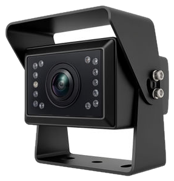
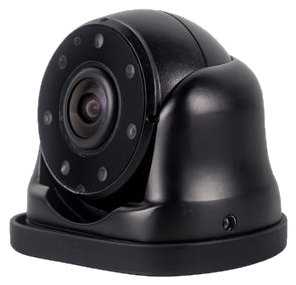
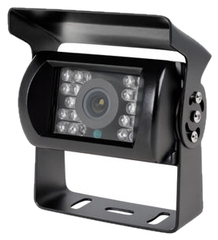
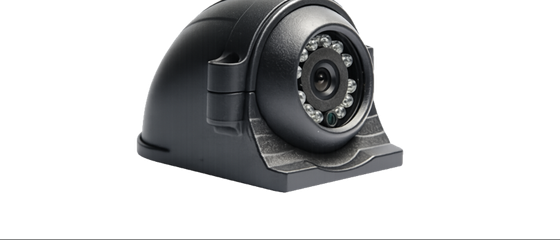
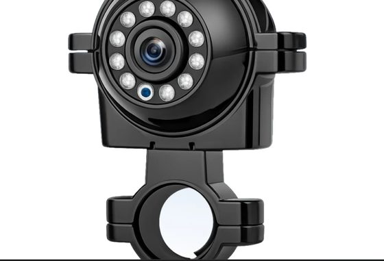
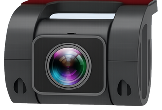
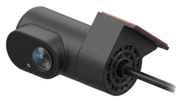
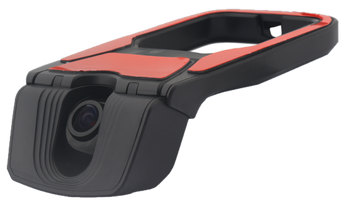
מסך ה-BSD נמכר כסט מלא עם 4 מצלמות; שאר המסכים הם תוספת למערכת ה-DVR הקיימת.
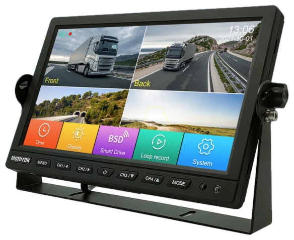
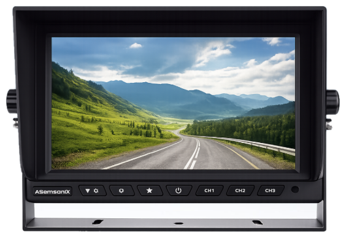
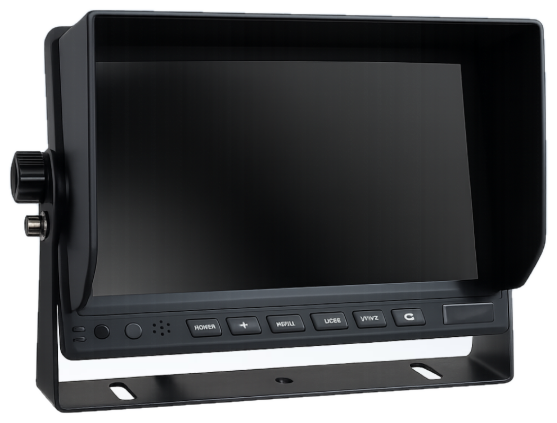
מערכת צפייה מרחוק חכמה ופשוטה לתפעול — שליטה מלאה בצי מהנייד, בכל רגע ומכל מקום.
צפייה חיה בכל מצלמה מהנייד או מהמחשב — רואים בדיוק מה קורה בכל משאית, בכל רגע.
שחזור מלא של מסלול הנסיעה עם מעקב GPS — בודקים בדיוק איפה הרכב היה ומתי.
גיבוי אוטומטי בענן — מ-10 עד 14 ימים אחורה, ובחבילות מורחבות עד 4 חודשים.
תמיכה ב-4 או 8 ערוצי מצלמה ברזולוציית Full HD 1080P — כיסוי מלא לכל זוויות הרכב.
אופציה לקבלת התראות בזמן אמת גם כשהרכב חונה — שמירה על המשאית גם כשלא נוהגים בה.
אפליקציה ותוכנה ידידותיות וקלות לתפעול — שליטה מלאה בלי כאב ראש טכני.
אופציה לחיבור למסך חיצוני או למולטימדיה הקיימת ברכב (בכפוף לתאימות).
עדכוני תוכנה ואבטחה שוטפים לשמירה על יציבות המערכת ועל אבטחת המידע לאורך זמן.
מארגז ועד מנוף — לכל סוג משאית פתרון מצלמות ייעודי. בסימולטור בוחרים את הסוג מתוך 11 יצרנים מובילים ורואים בדיוק איך זה נראה.
הובלת סחורה כללית, ריהוט ומשטחים — הנפוץ ביותר בהפצה עירונית ובין-עירונית.
מושך נתמכים (טריילרים) למרחקים ארוכים ולמשאות כבדים — עמוד השדרה של ההובלה.
פריקה הידראולית של חצץ, עפר וחומרי גלם — נפוץ באתרי בנייה ותשתית.
משטח פתוח לציוד גדול, מכולות וסחורה לא סטנדרטית.
הובלת דלק, מים, מזון נוזלי וכימיקלים — דורשת בטיחות מוגברת.
מכולות מתחלפות לפינוי פסולת, גרוטאות ומחזור.
הזרמת בטון לגובה ולמרחק באתרי בנייה.
הרמת משאות כבדים — מנופים מתקפלים לעבודות הקמה והרכבה.
בחר סוג משאית ויצרן, כוון כל מצלמה למיקום המדויק וצפה בתמונה החיה. לחץ "הפעל תאונה" לראות את ערך התיעוד.
← בחר מצלמה לכוונון
מבינים כמה משאיות, איזה סוגים ומה הצרכים — ובונים פתרון מותאם.
בסימולטור בוחרים תצורה ומכוונים כל מצלמה — רואים בדיוק מה תיקלט.
צוות מנוסה מתקין בשטח — מהיר, נקי ובלי להשבית את העבודה.
מחברים למסך הניהול. מאותו רגע — אתה רואה את כל הצי בזמן אמת.
לקוחות שהמצלמות שלהם כבר חסכו תביעות, השתתפויות עצמיות וכאב ראש.
נהג שלי נחסם בצומת ורכב פגע בנו מאחור. הביטוח רצה להאשים אותנו — שלחנו את הסרטון, התיק נסגר תוך יומיים. המערכת החזירה את עצמה בפגיעה אחת.
הכי חשוב לי זה שאני רואה את כל הצי מהמשרד בזמן אמת. יודע איפה כל משאית, מקבל התראה אם משהו קורה. שקט נפשי שלא היה לי קודם.
התקנה מקצועית ומהירה, לא השביתו לי את המשאיות ליום שלם. הצוות הגיע, התקין, חיבר למסך וזהו. ממליץ בחום לכל מי שיש לו ציוד כבד.
משאית עובדת באבק, רטט ושמש קופחת — מצלמה גנרית נשרפת, וכשצריך אותה היא לא שם. הנה ההבדל.
ממשאית בודדת ועד צי גדול — בוחרים את הרמה שמתאימה. המחירים הם נקודת פתיחה, וההצעה הסופית מותאמת אישית.
* המחירים הם נקודת פתיחה וכוללים התקנה. הצעת מחיר סופית תלויה בסוג המשאית, כמות ותצורה.
מבט חי על כל משאית — מיקום, מהירות, סטטוס מצלמות. כך נראה מסך הניהול (הדגמה אינטראקטיבית — לחץ על משאית).
בנה את התצורה למשאית שלך בסימולטור — תקבל הצעת מחיר חינם, ללא התחייבות. או דבר איתנו עכשיו ישירות בוואטסאפ.
⚡ תגובה מהירה · הצעת מחיר תוך 24 שעות · התקנה בכל הארץ